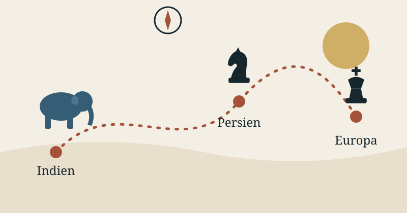
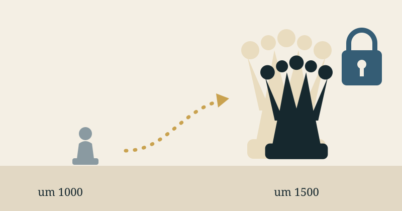

Schachgeschichte · Zeitstrahl
1500 Jahre Schach zum Entdecken.
Vom indischen Chaturanga bis zum jüngsten Weltmeister der Geschichte: 48 Stationen in sieben Epochen, mit Videos, Escape-Rooms und Weltmeister-Porträts zum Weiterlesen.

6. bis 9. Jahrhundert
Die Ursprünge
Aus einem indischen Kriegsspiel wird über Persien und die arabische Welt das Spiel, das wir heute kennen.
- um 600
Chaturanga in Indien
Im Norden Indiens entsteht ein Brettspiel mit vier Truppenteilen eines Heeres: Fußsoldaten, Reiter, Elefanten und Streitwagen. Es gilt als ältester sicherer Vorläufer des Schachs.
Spiel und Regeln - um 600
Schatrandsch in Persien
Persische Texte erwähnen das Spiel unter dem Namen Schatrandsch. Aus dem persischen Wort „Schah“ für König stammt unser Wort Schach, aus „Schah mat“ das Schachmatt: Der König ist hilflos.
Kultur und Gesellschaft - 7. bis 9. Jh.
Siegeszug in der arabischen Welt
Nach der arabischen Eroberung Persiens verbreitet sich das Spiel bis nach Nordafrika und Spanien. Bagdad wird zu einem Zentrum, an dem Meisterspieler am Kalifenhof auftreten.
Kultur und Gesellschaft - 10. Jh.
As-Suli, der erste Schachstar
Der Spieler und Gelehrte as-Suli gilt als stärkster Spieler seiner Zeit. Er schreibt Bücher über Strategie, und eine seiner Aufgaben beschäftigte Schachfreunde über tausend Jahre.
Spiel und Regeln

10. bis 15. Jahrhundert
Mittelalter
Schach erreicht Europa, wird Teil der höfischen Bildung und ändert seine Regeln. Am Ende steht die neue, starke Dame.
- um 1000
Die Einsiedler Verse
Im Kloster Einsiedeln in der Schweiz entsteht ein lateinisches Gedicht über Schach. Es ist der älteste bekannte europäische Text zum Spiel und nennt erstmals eine Königin und ein zweifarbiges Brett.
Kultur und Gesellschaft - 11. und 12. Jh.
Schach an Europas Höfen
Über Spanien, Italien und Byzanz verbreitet sich das Spiel in ganz Europa. Es gehört bald zu den Fertigkeiten, die ein Ritter beherrschen sollte.
Kultur und Gesellschaft - 12. Jh.
Die Lewis-Schachfiguren
Aus Walross-Elfenbein geschnitzte Figuren, vermutlich in Norwegen gefertigt. Gefunden wurden sie 1831 auf der schottischen Insel Lewis. Berühmt sind die Krieger, die grimmig in ihre Schilde beißen.
Kultur und Gesellschaft - 1283
Das Buch der Spiele
König Alfons X. von Kastilien lässt ein prachtvoll bebildertes Buch über Schach, Würfel- und Brettspiele anfertigen, mit über hundert Schachaufgaben.
Kultur und Gesellschaft - 13. und 14. Jh.
Neue Bauernregeln
Bauern dürfen nun beim ersten Zug zwei Felder vorrücken. Etwas später kommt das Schlagen „en passant“ hinzu.
Spiel und Regeln - um 1300
Schach als Spiegel der Gesellschaft
Der Dominikaner Jacobus de Cessolis deutet jede Figur als Stand der Gesellschaft, vom König bis zum Bauern. Sein Buch wird zu einem der meistgelesenen des Mittelalters. Eine englische Fassung von 1474 gehört zu den ersten gedruckten Büchern in englischer Sprache.
Kultur und Gesellschaft - um 1475 bis 1497
Die Geburt der modernen Dame
In Spanien und Italien wird aus der schwachen Ratgeberfigur die mächtige Dame, auch der Läufer zieht nun weit. Lucenas Buch von 1497 ist das älteste erhaltene gedruckte Schachbuch mit den neuen Regeln.
Spiel und Regeln

16. bis 18. Jahrhundert
Neuzeit und Aufklärung
Schach wird gedruckt, studiert und analysiert. In Kaffeehäusern trifft sich die Schachwelt, und ein Automat verblüfft Europa.
- 1561
Ruy López und das Gambit
Der spanische Priester Ruy López veröffentlicht ein einflussreiches Lehrbuch und prägt das Wort Gambit. Die Spanische Partie trägt bis heute im Englischen seinen Namen.
Spiel und Regeln - 1575
Wettkampf am spanischen Hof
Am Hof König Philipps II. in Madrid treten italienische und spanische Meister gegeneinander an. Der Italiener Leonardo da Cutri gewinnt. Das Treffen gilt oft als erstes internationales Turnier.
Turniere und Meister - 1616
Das erste große deutsche Schachbuch
Herzog August der Jüngere von Braunschweig-Lüneburg veröffentlicht unter dem Namen Gustavus Selenus „Das Schach- oder König-Spiel“.
Kultur und Gesellschaft - um 1620
Gioachino Greco
Der Italiener verdient sein Geld mit Schach an europäischen Höfen. Seine kurzen, eleganten Musterpartien werden bis heute zum Lernen genutzt.
Spiel und Regeln - 1749
Philidor: Die Bauern sind die Seele
Der Franzose François-André Danican Philidor, auch Komponist, erklärt erstmals die Bedeutung der Bauernstruktur. Sein Buch prägt das Schachdenken für ein Jahrhundert.
Spiel und Regeln - 1770
Der Schachtürke
Wolfgang von Kempelen präsentiert am Wiener Hof einen scheinbar denkenden Schachautomaten. In Wahrheit sitzt ein Mensch darin. Der Automat tourt Jahrzehnte durch Europa und Amerika und verbrennt 1854 in Philadelphia.
Technik - 18. Jh.
Das Café de la Régence
Das Pariser Kaffeehaus wird zum Mittelpunkt der Schachwelt. Hier spielen Philidor und später viele große Meister des 19. Jahrhunderts.
Kultur und Gesellschaft

19. Jahrhundert
Romantik und erste Turniere
Opfer, Angriff, Leidenschaft: Das romantische Schach begeistert. Gleichzeitig entstehen Turniere, Vereine, Zeitschriften und der Weltmeistertitel.
- 1834
La Bourdonnais gegen McDonnell
Der Franzose und der Ire spielen in London eine Serie von über achtzig Partien. Sie werden ausführlich veröffentlicht und begeistern eine breite Leserschaft.
Turniere und Meister - 1836
Die erste Schachzeitschrift
In Paris erscheint „Le Palamède“, die erste Zeitschrift, die sich nur dem Schach widmet.
Kultur und Gesellschaft - 1849
Die Staunton-Figuren
Ein Londoner Hersteller bringt die schlichten, gut unterscheidbaren Figuren heraus, benannt nach dem Meister Howard Staunton. Sie sind bis heute Turnierstandard.
Kultur und Gesellschaft - 1851
London: Das erste internationale Turnier
Während der Weltausstellung findet in London das erste große internationale Turnier statt. Es gewinnt Adolf Anderssen aus Breslau, der im selben Jahr die „Unsterbliche Partie“ spielt.
Turniere und Meister - 1858
Morphy in der Oper
Der Amerikaner Paul Morphy besiegt in einer Pariser Opernloge den Herzog von Braunschweig und einen Grafen in einer Partie, die bis heute als Lehrstück für schnelle Entwicklung gilt.
Turniere und Meister - 1877
Gründung des Deutschen Schachbunds
In Leipzig schließen sich Vereine zum Deutschen Schachbund zusammen. Er richtet regelmäßig große Turniere aus.
Kultur und Gesellschaft - 1883
Die Schachuhr
Beim Turnier in London wird erstmals eine Doppeluhr eingesetzt. Wer seine Zeit überschreitet, verliert. Vorher wurden teils Sanduhren benutzt.
Technik - 1886
Die erste offizielle Weltmeisterschaft
Wilhelm Steinitz besiegt Johannes Zukertort und wird erster offizieller Weltmeister. Steinitz begründet das positionelle Denken: erst Vorteile sammeln, dann angreifen.
Turniere und MeisterZu den Weltmeister-Porträts →

1890 bis 1945
Neue Ideen und dunkle Jahre
Hypermoderne Ideen, internationale Verbände und Schach als Bildungsbewegung. Dann Ausgrenzung, Verfolgung und Krieg.
- 1894
Emanuel Lasker wird Weltmeister
Der Mathematiker und Philosoph aus Berlinchen hält den Titel 27 Jahre lang, länger als jeder andere.
Turniere und MeisterZu den Weltmeister-Porträts → - 1912
Der Deutsche Arbeiter-Schachbund
In Nürnberg wird der Arbeiter-Schachbund gegründet. Schach soll die Bildung der Arbeiterschaft fördern. Zeitweise hat die Bewegung mehr Mitglieder als der bürgerliche Schachbund.
Kultur und Gesellschaft - 1914
Turnier im Krieg
Beim Turnier des Deutschen Schachbunds in Mannheim bricht der Erste Weltkrieg aus. Das Turnier wird abgebrochen, russische Teilnehmer werden interniert.
Turniere und Meister - 1920er
Die Hypermodernen
Réti und Nimzowitsch stellen alte Lehrsätze in Frage: Man muss das Zentrum nicht besetzen, man kann es aus der Ferne kontrollieren. Nimzowitschs „Mein System“ erscheint 1925.
Spiel und Regeln - 1924
Gründung der FIDE
In Paris wird der Weltschachbund FIDE gegründet. Sein Motto lautet „Gens una sumus“: Wir sind eine Familie.
Turniere und Meister - 1927
Vera Menchik und Aljechin
Vera Menchik wird in London erste Weltmeisterin. Im selben Jahr besiegt Alexander Aljechin in Buenos Aires den als unbesiegbar geltenden Capablanca.
Turniere und MeisterZu den Weltmeister-Porträts → - ab 1933
Ausgrenzung und Verbot
Im Nationalsozialismus werden jüdische Spielerinnen und Spieler aus den Vereinen gedrängt, die Arbeiterschachvereine verboten. Emanuel Lasker verlässt Deutschland.
Kultur und Gesellschaft - 1939
Olympiade am Kriegsbeginn
Während der Schacholympiade in Buenos Aires beginnt der Zweite Weltkrieg. Viele Spieler kehren nicht nach Europa zurück, darunter Miguel Najdorf.
Turniere und Meister - 1939 bis 1945
Schach in Lagern und Ghettos
Auch unter unmenschlichen Bedingungen spielten Häftlinge Schach, oft mit selbstgeschnitzten Figuren. Das Spiel konnte ein Stück Würde und Selbstbehauptung bedeuten.
Kultur und GesellschaftMehr dazu →

1945 bis 1991
Schach im Kalten Krieg
Die Sowjetunion macht Schach zur Staatssache. Am Brett spiegeln sich die großen politischen Gegensätze der Zeit.
- 1948
Botwinnik und die sowjetische Schule
Michail Botwinnik gewinnt das WM-Turnier. Bis 1972 stellt die Sowjetunion ohne Unterbrechung den Weltmeister.
Turniere und MeisterZu den Weltmeister-Porträts → - 1950
Großmeistertitel und erste Computertheorie
Die FIDE vergibt erstmals offiziell den Großmeistertitel. Im selben Jahr beschreibt der Mathematiker Claude Shannon, wie ein Computer Schach spielen könnte.
Technik - 1970
Die Elo-Zahl
Die FIDE übernimmt das Wertungssystem des Physikers Arpad Elo. Seitdem lässt sich die Spielstärke in einer Zahl ausdrücken.
Turniere und Meister - 1972
Fischer gegen Spasski
In Reykjavík besiegt der Amerikaner Bobby Fischer den sowjetischen Weltmeister Boris Spasski. Das Match wird weltweit als Duell der Systeme verfolgt.
Turniere und MeisterZu den Weltmeister-Porträts → - 1978
Karpow gegen Kortschnoi
Der Weltmeister trifft auf den in den Westen emigrierten Herausforderer. Das Match in Baguio ist von Misstrauen, Protesten und Streit um einen Parapsychologen geprägt.
Kultur und Gesellschaft - 1985
Kasparow wird Weltmeister
Mit 22 Jahren besiegt Garri Kasparow Anatoli Karpow und wird damals jüngster Weltmeister.
Turniere und MeisterZu den Weltmeister-Porträts → - 1991
Judit Polgár und Xie Jun
Judit Polgár wird mit 15 Jahren Großmeisterin, jünger als einst Bobby Fischer. Xie Jun wird erste chinesische Weltmeisterin.
Turniere und MeisterZu den Weltmeister-Porträts →

seit 1991
Computer, Internet, neue Generation
Maschinen schlagen Menschen, Programme werden zu Trainern, und Schach erlebt online einen nie dagewesenen Boom.
- 1993
Zwei Weltmeister
Kasparow und Short spielen ihr WM-Match außerhalb der FIDE. Bis 2006 gibt es zwei Weltmeistertitel, dann vereint Wladimir Kramnik sie wieder.
Turniere und MeisterZu den Weltmeister-Porträts → - 1997
Deep Blue schlägt Kasparow
Der IBM-Rechner gewinnt in New York einen Wettkampf über sechs Partien gegen den amtierenden Weltmeister. Ein Wendepunkt im Verhältnis von Mensch und Maschine.
Technik - 2013
Magnus Carlsen
Der Norweger wird Weltmeister und prägt das Schach für ein Jahrzehnt. 2023 verzichtet er auf die Titelverteidigung.
Turniere und MeisterZu den Weltmeister-Porträts → - 2017
AlphaZero
Ein Programm lernt Schach nur aus den Regeln, indem es gegen sich selbst spielt. Nach wenigen Stunden ist es stärker als die besten herkömmlichen Programme.
Technik - 2020
Der Schachboom
In der Pandemie spielen Millionen Menschen online. Die Serie „Das Damengambit“ weckt zusätzlich weltweit Interesse am Spiel.
Kultur und Gesellschaft - 2024
Gukesh, jüngster Weltmeister
Der Inder Dommaraju Gukesh besiegt Ding Liren und wird mit 18 Jahren jüngster Weltmeister der Geschichte.
Turniere und MeisterZu den Weltmeister-Porträts →
Keine Treffer. Probier einen anderen Suchbegriff oder wähle „Alle“.
Und jetzt du
Kannst du die Ereignisse auch ohne Hilfe in die richtige Reihenfolge bringen? Teste dich im Sortierspiel oder im Quiz „Wer war's?“.
© Dr. Edmund Bruns, 2026. Texte: CC BY-NC 4.0. Jahreszahlen der frühen Epochen sind Näherungswerte, da die Quellenlage unsicher ist.